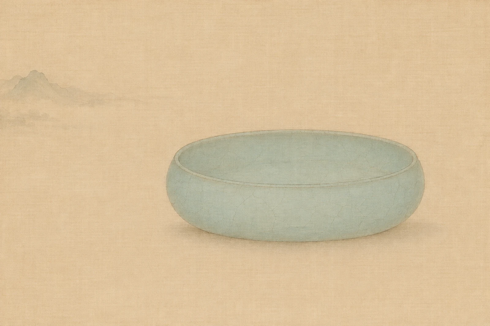

That shade of blue-green
In the late Northern Song dynasty, the court found fault with the white porcelain of the Ding kilns: it had mang, and was not pleasant to use. So the court ordered Ruzhou, in Henan, to fire celadon. Ye Zhi, a writer of the Southern Song, recorded this in his Tanzhai Biheng, and added a verdict of his own: Ru ranks first.
Later generations called its glaze colour tianqing, “sky blue-green”: not bright, leaning pale. The glaze is covered in a fine web of cracks, known as kaipian, or crackle. The body and the glaze shrink by different amounts as they cool, and so the glaze cracks. It is simply a trace left by the firing. On Ru ware, it became the mark by which the ware is known.

Why it was lost
The years of firing for the palace were short: about twenty in all. By 1127 at the latest, when the Jingkang Incident brought the fall of the Northern Song capital, the commission came to an end. By the Southern Song, Zhou Hui was already writing in Qingbo Zazhi that Ru ware had become “especially hard to find of late”. The same passage preserves a detail: there was agate in the glaze.
It is often said that the craft was lost. Exactly where the chain broke, the records cannot fully tell. Very few pieces of Ru ware survive. On 3 October 2017, at Sotheby’s Hong Kong, a Northern Song Ru ware brush washer sold for about HK$294 million, including buyer’s premium: at the time, the auction record for Chinese porcelain.
Archaeologists have identified the Ru kiln site at Qingliangsi, in Baofeng, Henan. People in Henan still fire Ru porcelain today, and the firing technique of Ru porcelain is on China’s national list of intangible cultural heritage. These are the people LongFlame has set out to find.